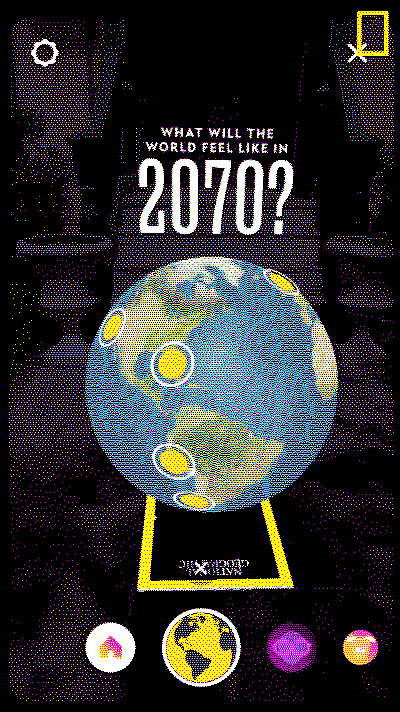

DEVELOPING AUGMENTED REALITIES WITHIN THE SPACE
OF AGRICULTURAL TECHNOLOGY
Michael Elijah Rodriguez
Post ✵
REFERENCE DESK
This website will serve as documentation during my internship with The Urban Wild.
My focus for this project will be around creating virtual worlds as a means of an exploration of what is capable
with agrictulral technology.
We have developed three concepts for our augmented reality scenes.
A Yielding Hydroponic System
we have envision of producing a virtual scenario where the user will be able to sow seeds into a selected hydropnic system.
A user interaction will toggle the system to begin growing, showing a timelapse duration of a crop from seed to harvest.
*SCREENSHOT*SERGIO፧GARCIA
360 3D TOUR OF A NEIGHBORS FARM
this will encompass a trip to one of the organizations partnered farms who particapates in the agricultural technology movement.
we will be making a trip over to New Jersey to create a 360 3D rendering of their farm using a 3D video camera. This will be rendered into a guided tour.
SPHERICAL፧360፧D4GREE፧IMAGES
GUIDED VIDEO FUTURE SCENARIO
lastly the third scenario would be a dystopic possible future about what it may look like if we don't come up with any solutions to some of
the prevalent issues within our agricultural systems. Not exactly sure what the future will look like, but soon we will develop some concepts that can sure scare some people into
getting their act together.

My experience with developing AR was first introduced by the SFPC,
where they taught a summer workshop exploring augmented reality as an artistic, and technological displine.
Getting started I found myself at a limitation already, while trying to browse for 3D Objects for this project.
All of the objects on sketchfab and other 3D modeling sites were either inadequate, or not free. I came to a conclusion that it will
be most beneficial if I had just learned blender for these projects. What not better time to pick it up? It would be benefaciary to pick it up.
There are so many uses for this free libre open source software.
I have to admit I was always discouraged by the intimidating interface, but lets dive in head first.
I really enjoyed this tutorial[Beginner Friendly], after spending some time I felt more comfortable, and knowledgable of some of the basic tooling in blend.
Fig.1 - 1st Model Exploring the Software Blender
BLENDER FIELD NOTES
My experience with developing AR was first introduced by the SFPC,
where they taught a summer workshop exploring augmented reality as an artistic, and technological displine.